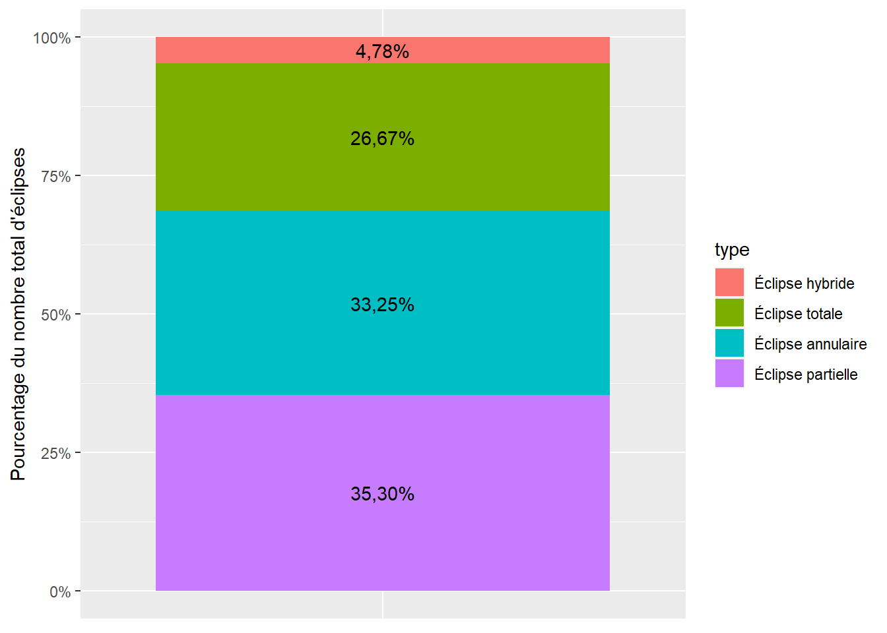

| type | n |
|---|---|
| Éclipse annulaire | 3956 |
| Éclipse hybride | 569 |
| Éclipse partielle | 4200 |
| Éclipse totale | 3173 |
5000 ans d’éclipses
Éclipse totale de soleil du 8 avril 2024
La prochaine éclipse solaire totale observable se déroulera le 8 avril 2024. C’est une chance inouïe de pouvoir observer ce phénomène céleste naturel. Un peu de planification sera nécessaire pour ne pas se priver d’un tel spectacle!
Étudier les données
Pour mieux comprendre les éclipses, nous sommes allés chercher des données s’étalant sur 5 000 ans disponibles sur le site Five Millenium Catalog of Hybrid Solar Eclipses.
Cette base de données regroupe 11898 éclipses s’étalant de l’année -1999 à l’année 3000. Ça correspond à une moyenne de 2.3796 éclipses par année.
La base de données sépare les éclipses en 4 types distincts:
- Éclipse totale
- La Lune recouvre complètement le Soleil.
- Éclipse annulaire
- La Lune se trouve plus près du Soleil. Ainsi, la Lune semble plus petite que le Soleil de notre point de vue. Un anneau du Soleil est visible autour de la Lune.
- Éclipse hybride
- L’éclipse a des portions d’éclipse totale et annulaire.
- Éclipse partielle
- Le Soleil et la Lune ne sont pas parfaitement alignés. Seulement une partie du Soleil est cachée par la Lune.
Des 11898 éclipses se trouvant dans la base de données, nous pouvons trouver le nombre d’éclipses de chaque type.
Si nous représentons ces données dans un graphique, nous obtenons:

Nous remarquons que presque 27% des éclipses sont totales.
Les éclipses selon les saisons
Puisque nous avons la date de chacune des éclipses, nous pouvons observer la variation du nombre d’éclipses en fonction du mois de l’année.
On remarque une augmentation marquée du nombre d’éclipses totales au milieu de l’année.
Nombres de Saros
Le Saros est, en astronomie, une période d’environ 18 ans qui peut être utilisée pour prédire les éclipses de Soleil et de Lune.
Après cet intervalle d’un Saros suivant une éclipse, le Soleil, la Terre et la Lune retrouvent approximativement la même configuration relative, et une éclipse presque identique se produit.
Le Saros est le temps au bout duquel les éclipses de Lune ou de Soleil seront « sensiblement les mêmes » que la fois précédente. Le Saros est une période de 6 585,321 jours, soit 18 ans, 11 jours (10 jours si l’intervalle contient 5 années bissextiles) 7 heures et 43 minutes.
Puisque la base de données contient les nombres de Saros pour toutes les éclipses sur 5 000 ans, nous pouvons visualiser les récurrences des éclipses en fonction du nombre de Saros.